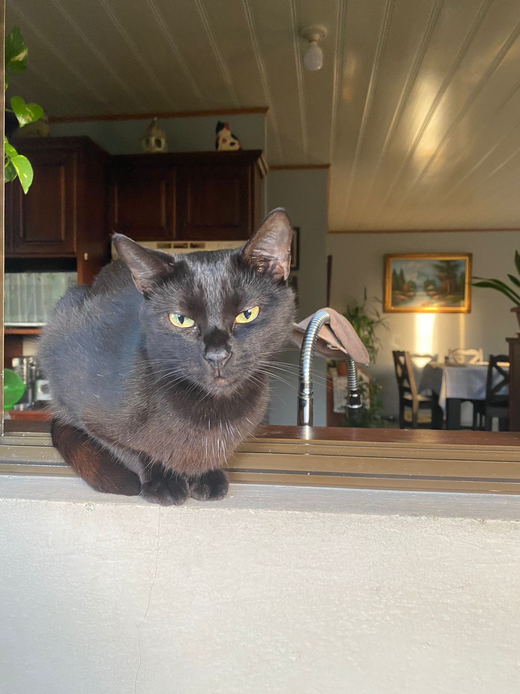

Este sitio es mi primer proyecto del curso CI-0137 "Desarrollo de aplicaciones web", y es una página personal sobre mí!
Este proyecto tiene como objetivo que aprenda más sobre HTML, css, y diferentes técnicas de manejo de Frontend, y la verdad he aprendido mucho!
- La frase "Valar Morghulis" que se encuentra en la página principal, es una frase de la serie Game of Thrones, que significa "Todos los hombres deben morir".
- El morado claro y el amarillo claro son mis colores favorito, por eso su uso en este proyecto, además, personalmente creo que combinan muy bien juntos.
- Esta es mi primera experiencia en HTML, y ha sido interesante hasta ahora, la verdad un poco desafiante pero he dado lo mejor para aprender y comprender.
- Escogí esta fuente porque no me gustaba la idea de que mi sitio personal se viera serio, ya que mi personalidad es bastante animada y quería reflejarlo.
- Esta es mi gata, se llama Onyx!
